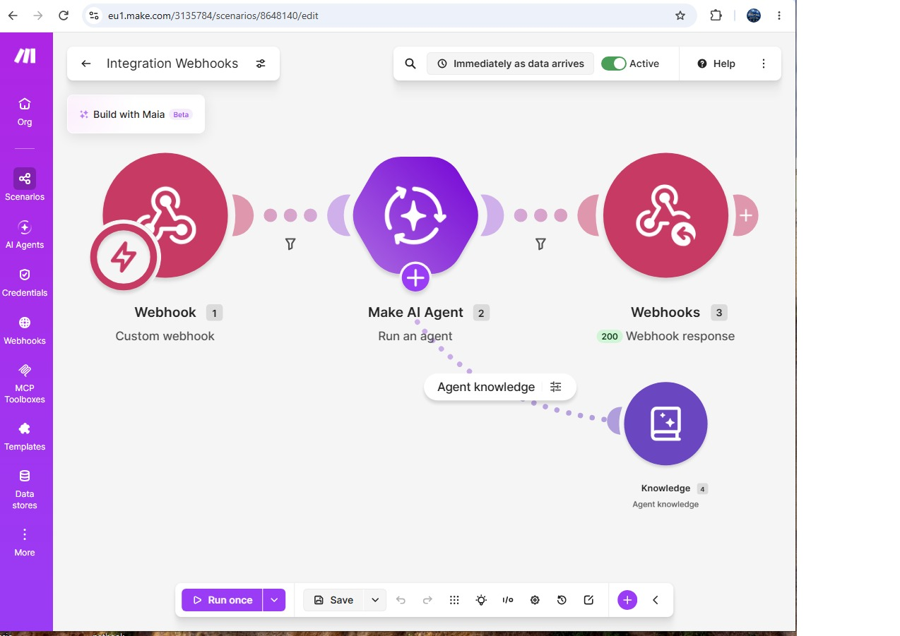

01 / ACQUISITION
Paid Advertising
Campaign planning and optimization to help reach qualified audiences and generate meaningful leads or sales.
- Meta Ads strategy
- Google Search & Display Ads
- Audience and creative testing
- Performance reporting
We help ambitious businesses attract the right audience, measure what matters, and build smarter customer journeys with paid advertising, conversion tracking and automation.
Strategy. Measurement. Momentum.
One connected approach to sustainable growth.
Growth works best when advertising, data and follow-up work together. Our services are designed to connect those moving parts.
Campaign planning and optimization to help reach qualified audiences and generate meaningful leads or sales.
Reliable measurement foundations so your team can understand which marketing activities drive action.
Organize contacts, manage pipelines and make sure opportunities receive timely, consistent follow-up.
Reduce repetitive admin with connected workflows that move information between the tools you use.
These are demonstration projects created to show our approach and technical process. They are not presented as paid client results.
A sample campaign framework for an online store: define the objective, map audiences, plan creative tests and establish a measurement routine.
A demonstration event plan showing how key customer actions can be mapped, implemented and tested across a website analytics setup.
A sample workflow connecting a lead form, Google Sheets and CRM, with an automated notification to support faster follow-up.

Implemented and tested an AI-powered website chatbot using Make.com. The workflow connects Custom Webhooks with Make AI Agent and Agent Knowledge to process visitor messages and return AI-generated responses to the website.
Every engagement starts with understanding the business goal, then selecting the right tools and measuring the work clearly.
Understand your offer, audience, current systems and business priorities.
Define the strategy, customer journey, tracking requirements and workflow.
Set up campaigns, analytics, CRM processes and useful automations.
Review the data, identify friction and prioritize the next improvements.
Digital Products Marketing is a growth-focused service brand combining paid advertising, conversion measurement, CRM and automation. Our approach is practical: understand the goal, build a connected system and make the next decision using useful data.
This website includes illustrative demonstration projects. Specific client names, testimonials, budgets and performance results will only be added when they can be accurately verified and shared with permission.
Tell us about your business, your goals and the systems you want to improve.